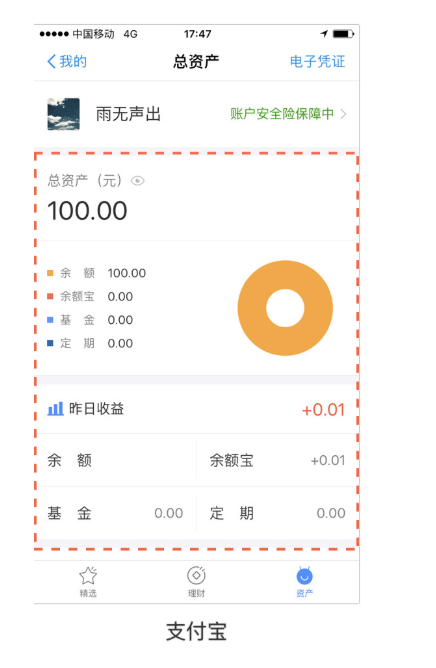

<!DOCTYPE html>
<html>
<head><meta name="generator" content="Hexo 3.8.0">
  <meta charset="utf-8">
  
  <title>移动端内容界面结构的导航设计模式 | guowj</title>
  <meta name="viewport" content="width=device-width, initial-scale=1, maximum-scale=1">
  
  <meta name="keywords" content="产品交互设计移动端内容界面结构">
  
  
  
  
  <meta name="description" content="&amp;nbsp;&amp;nbsp;&amp;nbsp;&amp;nbsp;&amp;nbsp;&amp;nbsp;上篇文章整理了移动端主导航常见的设计模式，本篇文章将从内容界面结构的角度阐述下常用的导航设计模式。">
<meta name="keywords" content="产品,交互设计,移动端,内容界面结构">
<meta property="og:type" content="article">
<meta property="og:title" content="移动端内容界面结构的导航设计模式">
<meta property="og:url" content="https://gwjacqueline.github.io/移动端内容界面结构的导航设计模式/index.html">
<meta property="og:site_name" content="guowj">
<meta property="og:description" content="&amp;nbsp;&amp;nbsp;&amp;nbsp;&amp;nbsp;&amp;nbsp;&amp;nbsp;上篇文章整理了移动端主导航常见的设计模式，本篇文章将从内容界面结构的角度阐述下常用的导航设计模式。">
<meta property="og:locale" content="zh-CN">
<meta property="og:image" content="https://gwjacqueline.github.io/images/pm/lbsdh.png">
<meta property="og:image" content="https://gwjacqueline.github.io/images/pm/ggsdh.png">
<meta property="og:image" content="https://gwjacqueline.github.io/images/pm/clgsdh.png">
<meta property="og:image" content="https://gwjacqueline.github.io/images/pm/clgsdh1.png">
<meta property="og:image" content="https://gwjacqueline.github.io/images/pm/clgsdh2.png">
<meta property="og:image" content="https://gwjacqueline.github.io/images/pm/clgsdh3.png">
<meta property="og:image" content="https://gwjacqueline.github.io/images/pm/kpsdh.png">
<meta property="og:image" content="https://gwjacqueline.github.io/images/pm/ybpsdh.png">
<meta property="og:image" content="https://gwjacqueline.github.io/images/pm/lbsdh2.png">
<meta property="og:image" content="https://gwjacqueline.github.io/images/pm/zdcdsdh.png">
<meta property="og:updated_time" content="2019-07-26T07:59:01.803Z">
<meta name="twitter:card" content="summary">
<meta name="twitter:title" content="移动端内容界面结构的导航设计模式">
<meta name="twitter:description" content="&amp;nbsp;&amp;nbsp;&amp;nbsp;&amp;nbsp;&amp;nbsp;&amp;nbsp;上篇文章整理了移动端主导航常见的设计模式，本篇文章将从内容界面结构的角度阐述下常用的导航设计模式。">
<meta name="twitter:image" content="https://gwjacqueline.github.io/images/pm/lbsdh.png">
  
    <link rel="alternate" href="/atom.xml" title="guowj" type="application/atom+xml">
  

  

  <link rel="icon" href="/css/images/mylogo.png">
  <link rel="apple-touch-icon" href="/css/images/mylogo.png">
  
    <link href="//fonts.googleapis.com/css?family=Source+Code+Pro" rel="stylesheet" type="text/css">
  
  <link href="https://fonts.googleapis.com/css?family=Open+Sans|Montserrat:700" rel="stylesheet" type="text/css">
  <link href="https://fonts.googleapis.com/css?family=Roboto:400,300,300italic,400italic" rel="stylesheet" type="text/css">
  <link href="//netdna.bootstrapcdn.com/font-awesome/4.0.3/css/font-awesome.css" rel="stylesheet">
  <style type="text/css">
    @font-face{font-family:futura-pt; src:url("../css/fonts/FuturaPTBold.otf") format("woff");font-weight:500;font-style:normal;}
    @font-face{font-family:futura-pt-light; src:url("../css/fonts/FuturaPTBook.otf") format("woff");font-weight:lighter;font-style:normal;}
    @font-face{font-family:futura-pt-italic; src:url("../css/fonts/FuturaPTBookOblique.otf") format("woff");font-weight:400;font-style:italic;}
}

  </style>
  <link rel="stylesheet" href="/css/style.css">

  <script src="/js/jquery-3.1.1.min.js"></script>
  <script src="/js/bootstrap.js"></script>

  <!-- Bootstrap core CSS -->
  <link rel="stylesheet" href="/css/bootstrap.css">

  
    <link rel="stylesheet" href="/css/dialog.css">
  

  

  
    <link rel="stylesheet" href="/css/header-post.css">
  

  
  
  
    <link rel="stylesheet" href="/css/vdonate.css">
  

</head>
</html>


  <body data-spy="scroll" data-target="#toc" data-offset="50">


  
  <div id="container">
    <div id="wrap">
      
        <header>

    <div id="allheader" class="navbar navbar-default navbar-static-top" role="navigation">
        <div class="navbar-inner">
          
          <div class="container"> 
            <button type="button" class="navbar-toggle" data-toggle="collapse" data-target=".navbar-collapse">
              <span class="sr-only">Toggle navigation</span>
              <span class="icon-bar"></span>
              <span class="icon-bar"></span>
              <span class="icon-bar"></span>
            </button>

            
              <a class="brand" style="
                 margin-top: 0px;" href="#" data-toggle="modal" data-target="#myModal">
                  
              </a>
            
            
            <div class="navbar-collapse collapse">
              <ul class="hnav navbar-nav">
                
                  <li> <a class="main-nav-link" href="/">首页</a> </li>
                
                  <li> <a class="main-nav-link" href="/archives">归档</a> </li>
                
                  <li> <a class="main-nav-link" href="/categories">分类</a> </li>
                
                  <li> <a class="main-nav-link" href="/tags">标签</a> </li>
                
                  <li><div id="search-form-wrap">

    <form class="search-form">
        <input type="text" class="ins-search-input search-form-input" placeholder>
        <button type="submit" class="search-form-submit"></button>
    </form>
    <div class="ins-search">
    <div class="ins-search-mask"></div>
    <div class="ins-search-container">
        <div class="ins-input-wrapper">
            <input type="text" class="ins-search-input" placeholder="请输入关键词...">
            <span class="ins-close ins-selectable"><i class="fa fa-times-circle"></i></span>
        </div>
        <div class="ins-section-wrapper">
            <div class="ins-section-container"></div>
        </div>
    </div>
</div>
<script>
(function (window) {
    var INSIGHT_CONFIG = {
        TRANSLATION: {
            POSTS: '文章',
            PAGES: '页面',
            CATEGORIES: '分类',
            TAGS: '标签',
            UNTITLED: '(无标题)',
        },
        ROOT_URL: '/',
        CONTENT_URL: '/content.json',
    };
    window.INSIGHT_CONFIG = INSIGHT_CONFIG;
})(window);
</script>
<script src="/js/insight.js"></script>

</div></li>
            </ul></div>
          </div>
                
      </div>
    </div>

</header>


      
            
      <div id="content" class="outer">
        
          <section id="main" style="float:none;"><article id="post-移动端内容界面结构的导航设计模式" style="width: 75%; float:left;" class="article article-type-post" itemscope itemprop="blogPost">
  <div id="articleInner" class="article-inner">
    
    
      <header class="article-header">
        
  
    <h1 class="thumb" itemprop="name">
      移动端内容界面结构的导航设计模式
    </h1>
  

      </header>
    
    <div class="article-meta">
      
	<a href="/移动端内容界面结构的导航设计模式/" class="article-date">
	  <time datetime="2019-07-21T03:07:51.000Z" itemprop="datePublished">2019-07-21</time>
	</a>

      
    <a class="article-category-link" href="/categories/产品/">产品</a>

      
	<a class="article-views">
	<span id="busuanzi_container_page_pv">
		阅读量<span id="busuanzi_value_page_pv"></span>
	</span>
	</a>

      

    </div>
    <div class="article-entry" itemprop="articleBody">
      
        <blockquote>
<p>&nbsp;&nbsp;&nbsp;&nbsp;&nbsp;&nbsp;上篇文章整理了移动端主导航常见的设计模式，本篇文章将从内容界面结构的角度阐述下常用的导航设计模式。</p>
</blockquote>
<a id="more"></a>
<h2 id="列表式导航"><a href="#列表式导航" class="headerlink" title="列表式导航"></a>列表式导航</h2><p>&nbsp;&nbsp;&nbsp;&nbsp;&nbsp;&nbsp;<strong>列表式导航</strong>当界面信息的种类比较单一，或者只是作为信息的链接入口时，我们可以使用列表式结构。这种结构可以高效、清晰地展示信息，可以容纳的信息比较多。列表式导航大多作为辅助导航来展示二级甚至更深层次的内容，若要作为主导航，必须满足层级浅且内容平级的条件</p>
<div align="center"><br>  <br></div>

<p><strong>优点：</strong></p>
<ul>
<li>从上往下符合用户的阅读习惯</li>
<li>列表式的信息格式比较一致，延展性很强，可以不断地增加信息</li>
<li>导航效率较高，可引入搜索功能</li>
<li>适合层级较深的信息结构</li>
<li>可以方便地进行分组分类</li>
</ul>
<p><strong>缺点：</strong></p>
<ul>
<li>当同级内容过多时，由于形式的统一，用户浏览容易造成视觉疲劳</li>
<li>越往下功能操作率越低</li>
<li>列表式可能有多层级，用户需在每个页面选择一次进行导航，直至到达目标位置，并且模块之间的切换需要返回到列表主页，操作步骤较多</li>
<li>如果列表中信息量比较庞大，往往需要加入搜索功能，否则用户寻找信息会很困</li>
</ul>
<p><strong>适用场景</strong></p>
<ul>
<li>功能名称较长</li>
<li>功能较多</li>
<li>内容展示为主</li>
<li>二级菜单或多级菜单较多</li>
</ul>
<p><strong>注意：</strong></p>
<ul>
<li>列表式导航的数量保持在一屏以内，超过一屏最好再分一级</li>
<li>将最终要的内容归纳在前 4 个列表更容易被人们记住</li>
<li>要注意为列表内容分类</li>
</ul>
<h2 id="宫格式导航"><a href="#宫格式导航" class="headerlink" title="宫格式导航"></a>宫格式导航</h2><p>&nbsp;&nbsp;&nbsp;&nbsp;&nbsp;&nbsp;宫格式（又称跳板式）主要作为信息聚合的入口，在这种界面中，用户 80%的行为都在寻找信息入口。信息呈现的内容比较少，但是多个项目选取的效率比较高。</p>
<div align="center"><br>  <br></div>

<p><strong>优点：</strong></p>
<ul>
<li>扩展性好</li>
<li>入口多，重要的功能都能呈现</li>
<li>用户能够直观选择出自己需要的功能模块</li>
</ul>
<p><strong>缺点：</strong></p>
<ul>
<li>平铺的内容多，用户的选择机会多，所以会增加选择压力（席克定律）</li>
<li>如果要切换功能的话必须返回到原始页面，操作流程多</li>
</ul>
<p><strong>适用场景</strong></p>
<ul>
<li>各功能模块重要性都比较高</li>
<li>功能模块比较多</li>
<li>用户切换不频繁的时候</li>
</ul>
<h2 id="陈列馆式导航"><a href="#陈列馆式导航" class="headerlink" title="陈列馆式导航"></a>陈列馆式导航</h2><p>&nbsp;&nbsp;&nbsp;&nbsp;&nbsp;&nbsp;陈列馆式导航设计区别于宫格式，在于可用来呈现实时内容（经常更新、视觉效果直观的内容），如新闻、菜谱、视频或照片等，内容彼此独立、无层级关系。可以采用网格布局或轮盘布局，还可以采用幻灯片模式进行展示。一般做为次级导航使用。</p>
<div align="center"><br>  <br></div>

<div align="center"><br>  <br></div>

<p><em>半隐藏部分内容，指引用户左右滑动察看</em></p>
<div align="center"><br>  <br></div>

<p><em>瀑布流网格布局，瀑布状的上下布局，引导用户的视觉方向，体验流畅，吸引用户浏览并沉浸其中</em></p>
<div align="center"><br>  <br></div>

<p><strong>优点：</strong></p>
<ul>
<li>与列表式、宫格式相比较，陈列馆式表现形式、视觉效果更加丰富</li>
<li>展示直观，且方便浏览经常更新的内容</li>
</ul>
<p><strong>缺点：</strong></p>
<ul>
<li>不适合展现顶层入口框架</li>
<li>界面内容较多时，容易造成视觉疲劳</li>
</ul>
<p><strong>适用场景</strong></p>
<ul>
<li>产品展示，多种信息推荐</li>
</ul>
<h2 id="卡片式导航"><a href="#卡片式导航" class="headerlink" title="卡片式导航"></a>卡片式导航</h2><p>&nbsp;&nbsp;&nbsp;&nbsp;&nbsp;&nbsp;卡片式导航的原型是扑克牌，模仿了扑克牌中常见的切牌、洗牌、弃牌、翻牌等手法，是一种比较新颖的导航设计模式</p>
<div align="center"><br>  <br></div>

<p><strong>优点：</strong></p>
<ul>
<li>方式新颖，配合操作动效，比较吸引用户</li>
<li>页面内容整体性强</li>
</ul>
<p><strong>缺点：</strong></p>
<ul>
<li>不适合展示过多页面，只能逐个察看，浏览效率低</li>
<li>不能跳跃性地察看间隔页面，只能按顺序察看相邻页面</li>
<li>各页面结构内容相似，容易忽略后面的内容。</li>
</ul>
<p><strong>适用场景</strong></p>
<ul>
<li>内容展示为主，信息间不存在联系</li>
</ul>
<h2 id="仪表盘式导航"><a href="#仪表盘式导航" class="headerlink" title="仪表盘式导航"></a>仪表盘式导航</h2><p>&nbsp;&nbsp;&nbsp;&nbsp;&nbsp;&nbsp;仪表式导航提供了一种度量关键绩效指标（KPI）是否达到要求的方法。经过设计以后，每一项量度都可以显示出额外的信息。这种主要的导航模式对于商业应用、分析工具以及销售和市场应用非常有用。但不要载入过多信息，对于要展示的关键指标或数据需经过仔细研究再做决定。</p>
<div align="center"><br>  <br></div>

<p><strong>优点：</strong></p>
<ul>
<li>数据更加生动直观易读</li>
</ul>
<p><strong>适用场景</strong></p>
<ul>
<li>需要使用关键指标或数据作为应用入口的时候</li>
</ul>
<h2 id="轮播式导航"><a href="#轮播式导航" class="headerlink" title="轮播式导航"></a>轮播式导航</h2><p>&nbsp;&nbsp;&nbsp;&nbsp;&nbsp;&nbsp;信息较少且足够扁平的时候。在天气的应用中较多使用。</p>
<div align="center"><br>  <br></div>

<p><strong>优点：</strong></p>
<ul>
<li>这种方式最大程度保证了页面的简洁性和内容的完整性，一般都结合页面指示器（即小圆点），操作方便，左右滑动切换</li>
</ul>
<p><strong>缺点：</strong></p>
<ul>
<li>承载入口的数量有限，超过 10 个可能就太多了</li>
<li>用户只能切换到相邻页面，难以快速切换到目标页面。且容易迷失位置，所以需要页面指示器（页面过多时，需用其他指示方式如数字，来表示位置）指示用户当前的位置</li>
</ul>
<p><strong>适用场景</strong></p>
<ul>
<li>轮播式导航也常用于察看图片，常于其他导航模式结合，作为广告 banner 呈现</li>
<li>天气应用就使用了轮播导航，一个页面展示当前城市的完整天气情况，左右滑动切换察看其他城市的情况，十分方便</li>
</ul>
<h2 id="折叠菜单式导航"><a href="#折叠菜单式导航" class="headerlink" title="折叠菜单式导航"></a>折叠菜单式导航</h2><p>&nbsp;&nbsp;&nbsp;&nbsp;&nbsp;&nbsp;折叠菜单式导航（又称手风琴式），就是运用动态的效果，将二级的信息展开，无需跳转到新的页面，使用户在同一个页面上查看到更多的信息，不需要任何跳转。折叠菜单式一般层级较少，展开后就可看到具体内容，且内容量相对较小，方便再次收起</p>
<div align="center"><br>  <br></div>

<p><strong>优点：</strong></p>
<ul>
<li>通过折叠的方式，用户在当前页面就能获取大量信息，这种方式比跳转到二级页面再跳转回来更高效</li>
</ul>
<p><strong>适用场景</strong></p>
<ul>
<li>有限空间上需要展示更多的内容</li>
</ul>
<p><strong>注意：</strong></p>
<ul>
<li>一定要使用常见的图标来进行指示折叠式菜单的打开或关闭状态，避免用户产生疑问</li>
</ul>
<p>感谢以下大牛的分享：</p>
<ul>
<li><a href="https://www.uisdc.com/7-mobile-navigation-design-pattern" target="_blank" rel="noopener">深入浅出！全方位科普移动端导航的七种设计模式</a></li>
<li><a href="http://www.woshipm.com/ucd/669794.html" target="_blank" rel="noopener">【交互基础】系列之解析移动端导航设计模式</a></li>
<li><a href="https://www.uisdc.com/mobile-navigation-design-mode" target="_blank" rel="noopener">交互基础小课堂！移动端的导航设计模式</a></li>
<li><a href="https://juejin.im/entry/585168a4128fe1006b51d776" target="_blank" rel="noopener">移动导航设计</a></li>
</ul>

      
    </div>
    <footer class="article-footer">
      
        <div id="donation_div"></div>

<script src="/js/vdonate.js"></script>
<script>
var a = new Donate({
  title: '如果觉得我的文章对您有用，请随意打赏。您的支持将鼓励我继续创作!', // 可选参数，打赏标题
  btnText: '打赏支持', // 可选参数，打赏按钮文字
  el: document.getElementById('donation_div'),
  wechatImage: '../images/wx.jpeg',
  alipayImage: '../images/zfb.jpg'
});
</script>
      
      
      <div>
        <ul class="post-copyright">
          <li class="post-copyright-author">
          <strong>本文作者:  </strong>guowj
          </li>
          <li class="post-copyright-link">
          <strong>本文链接:  </strong>
          <a href="/移动端内容界面结构的导航设计模式/" target="_blank" title="移动端内容界面结构的导航设计模式">https://gwjacqueline.github.io/移动端内容界面结构的导航设计模式/</a>
          </li>
          <li class="post-copyright-license">
            <strong>版权声明:   </strong>
            本博客所有文章除特别声明外，均采用 <a rel="license" href="https://creativecommons.org/licenses/by-nc-nd/4.0/" target="_blank" title="Attribution-NonCommercial-NoDerivatives 4.0 International (CC BY-NC-ND 4.0)">CC BY-NC-ND 4.0</a>
            许可协议。转载请注明出处
          </li>
         
        </ul>
<div>
</div></div>
      
      
        
	<div id="comment">
		<!-- 来必力City版安装代码 -->
		<div id="lv-container" data-id="city" data-uid="MTAyMC80MzU1OS8yMDA5OA==" ">
		<script type="text/javascript">
		   (function(d, s) {
		       var j, e = d.getElementsByTagName(s)[0];

		       if (typeof LivereTower === 'function') { return; }

		       j = d.createElement(s);
		       j.src = 'https://cdn-city.livere.com/js/embed.dist.js';
		       j.async = true;

		       e.parentNode.insertBefore(j, e);
		   })(document, 'script');
		</script>
		<noscript>为正常使用来必力评论功能请激活JavaScript</noscript>
		</div>
		<!-- City版安装代码已完成 -->
	</div>


      
      
        
  <ul class="article-tag-list"><li class="article-tag-list-item"><a class="article-tag-list-link" href="/tags/交互设计/">交互设计</a></li><li class="article-tag-list-item"><a class="article-tag-list-link" href="/tags/产品/">产品</a></li><li class="article-tag-list-item"><a class="article-tag-list-link" href="/tags/内容界面结构/">内容界面结构</a></li><li class="article-tag-list-item"><a class="article-tag-list-link" href="/tags/移动端/">移动端</a></li></ul>

      

    </footer>
  </div>
  
    
<nav id="article-nav">
  
    <a href="/toB产品和toC产品的区别/" id="article-nav-newer" class="article-nav-link-wrap">
      <strong class="article-nav-caption">上一篇</strong>
      <div class="article-nav-title">
        
          toB产品和toC产品的区别
        
      </div>
    </a>
  
  
    <a href="/移动端主导航的设计模式/" id="article-nav-older" class="article-nav-link-wrap">
      <strong class="article-nav-caption">下一篇</strong>
      <div class="article-nav-title">移动端主导航的设计模式</div>
    </a>
  
</nav>

  
</article>

<!-- Table of Contents -->

  <aside id="toc-sidebar">
    <div id="toc" class="toc-article">
    <strong class="toc-title">文章目录</strong>
    
        <ol class="nav"><li class="nav-item nav-level-2"><a class="nav-link" href="#列表式导航"><span class="nav-number">1.</span> <span class="nav-text">列表式导航</span></a></li><li class="nav-item nav-level-2"><a class="nav-link" href="#宫格式导航"><span class="nav-number">2.</span> <span class="nav-text">宫格式导航</span></a></li><li class="nav-item nav-level-2"><a class="nav-link" href="#陈列馆式导航"><span class="nav-number">3.</span> <span class="nav-text">陈列馆式导航</span></a></li><li class="nav-item nav-level-2"><a class="nav-link" href="#卡片式导航"><span class="nav-number">4.</span> <span class="nav-text">卡片式导航</span></a></li><li class="nav-item nav-level-2"><a class="nav-link" href="#仪表盘式导航"><span class="nav-number">5.</span> <span class="nav-text">仪表盘式导航</span></a></li><li class="nav-item nav-level-2"><a class="nav-link" href="#轮播式导航"><span class="nav-number">6.</span> <span class="nav-text">轮播式导航</span></a></li><li class="nav-item nav-level-2"><a class="nav-link" href="#折叠菜单式导航"><span class="nav-number">7.</span> <span class="nav-text">折叠菜单式导航</span></a></li></ol>
    
    </div>
  </aside>

</section>
        
      </div>
      
      <footer id="footer">
  

  <div class="container">
      	<div class="row">
	      <!--<p> Powered by <a href="http://hexo.io/" target="_blank">Hexo</a> and <a href="https://github.com/iTimeTraveler/hexo-theme-hiker" target="_blank">Hexo-theme-hiker</a> </p>-->
	      <p id="copyRightEn">Copyright &copy;2019 guowj All Rights Reserved.</p>
	      
	      
    		<p class="busuanzi_uv">
				访客数 : <span id="busuanzi_value_site_uv"></span> |  
				访问量 : <span id="busuanzi_value_site_pv"></span>
		    </p>
  		   
		</div>

		
  </div>
</footer>


<!-- min height -->

<script>
    var wrapdiv = document.getElementById("wrap");
    var contentdiv = document.getElementById("content");
    var allheader = document.getElementById("allheader");

    wrapdiv.style.minHeight = document.body.offsetHeight + "px";
    if (allheader != null) {
      contentdiv.style.minHeight = document.body.offsetHeight - allheader.offsetHeight - document.getElementById("footer").offsetHeight + "px";
    } else {
      contentdiv.style.minHeight = document.body.offsetHeight - document.getElementById("footer").offsetHeight + "px";
    }
</script>
    </div>
    <!-- <nav id="mobile-nav">
  
    <a href="/" class="mobile-nav-link">Home</a>
  
    <a href="/archives" class="mobile-nav-link">Archives</a>
  
    <a href="/categories" class="mobile-nav-link">Categories</a>
  
    <a href="/tags" class="mobile-nav-link">Tags</a>
  
</nav> -->
    

<!-- mathjax config similar to math.stackexchange -->

<script type="text/x-mathjax-config">
  MathJax.Hub.Config({
    tex2jax: {
      inlineMath: [ ['$','$'], ["\\(","\\)"] ],
      processEscapes: true
    }
  });
</script>

<script type="text/x-mathjax-config">
    MathJax.Hub.Config({
      tex2jax: {
        skipTags: ['script', 'noscript', 'style', 'textarea', 'pre', 'code']
      }
    });
</script>

<script type="text/x-mathjax-config">
    MathJax.Hub.Queue(function() {
        var all = MathJax.Hub.getAllJax(), i;
        for(i=0; i < all.length; i += 1) {
            all[i].SourceElement().parentNode.className += ' has-jax';
        }
    });
</script>

<script type="text/javascript" src="https://cdnjs.cloudflare.com/ajax/libs/mathjax/2.7.1/MathJax.js?config=TeX-AMS-MML_HTMLorMML">
</script>


  <link rel="stylesheet" href="/fancybox/jquery.fancybox.css">
  <script src="/fancybox/jquery.fancybox.pack.js"></script>


<script src="/js/scripts.js"></script>


  <script src="/js/dialog.js"></script>


	<div style="display: none;">
    <script src="https://s95.cnzz.com/z_stat.php?id=1260716016&web_id=1260716016" language="JavaScript"></script>
  </div>


	<script async src="//busuanzi.ibruce.info/busuanzi/2.3/busuanzi.pure.mini.js">
	</script>


  </div>

  <div class="modal fade" id="myModal" tabindex="-1" role="dialog" aria-labelledby="myModalLabel" aria-hidden="true" style="display: none;">
  <div class="modal-dialog">
    <div class="modal-content">
      <div class="modal-header">
        <h2 class="modal-title" id="myModalLabel">设置</h2>
      </div>
      <hr style="margin-top:0px; margin-bottom:0px; width:80%; border-top: 3px solid #000;">
      <hr style="margin-top:2px; margin-bottom:0px; width:80%; border-top: 1px solid #000;">


      <div class="modal-body">
          <div style="margin:6px;">
            <a data-toggle="collapse" data-parent="#accordion" href="#collapseOne" onclick="javascript:setFontSize();" aria-expanded="true" aria-controls="collapseOne">
              正文字号大小
            </a>
          </div>
          <div id="collapseOne" class="panel-collapse collapse" role="tabpanel" aria-labelledby="headingOne">
          <div class="panel-body">
            您已调整页面字体大小
          </div>
        </div>
      


          <div style="margin:6px;">
            <a data-toggle="collapse" data-parent="#accordion" href="#collapseTwo" onclick="javascript:setBackground();" aria-expanded="true" aria-controls="collapseTwo">
              夜间护眼模式
            </a>
        </div>
          <div id="collapseTwo" class="panel-collapse collapse" role="tabpanel" aria-labelledby="headingTwo">
          <div class="panel-body">
            夜间模式已经开启，再次单击按钮即可关闭 
          </div>
        </div>

        <div>
            <a data-toggle="collapse" data-parent="#accordion" href="#collapseThree" aria-expanded="true" aria-controls="collapseThree">&nbsp;&nbsp;&nbsp;&nbsp;&nbsp;&nbsp;关 于&nbsp;&nbsp;&nbsp;&nbsp;&nbsp;&nbsp;</a>
        </div>
         <div id="collapseThree" class="panel-collapse collapse" role="tabpanel" aria-labelledby="headingThree">
          <div class="panel-body">
            guowj
          </div>
          <div class="panel-body">
            Copyright © 2019 guowj All Rights Reserved.
          </div>
        </div>
      </div>


      <hr style="margin-top:0px; margin-bottom:0px; width:80%; border-top: 1px solid #000;">
      <hr style="margin-top:2px; margin-bottom:0px; width:80%; border-top: 3px solid #000;">
      <div class="modal-footer">
        <button type="button" class="close" data-dismiss="modal" aria-label="Close"><span aria-hidden="true">×</span></button>
      </div>
    </div>
  </div>
</div>
  
  <a id="rocket" href="#top" class=""></a>
  <script type="text/javascript" src="/js/totop.js?v=1.0.0" async=""></script>
  
    <a id="menu-switch"><i class="fa fa-bars fa-lg"></i></a>
  
</body>
</html>